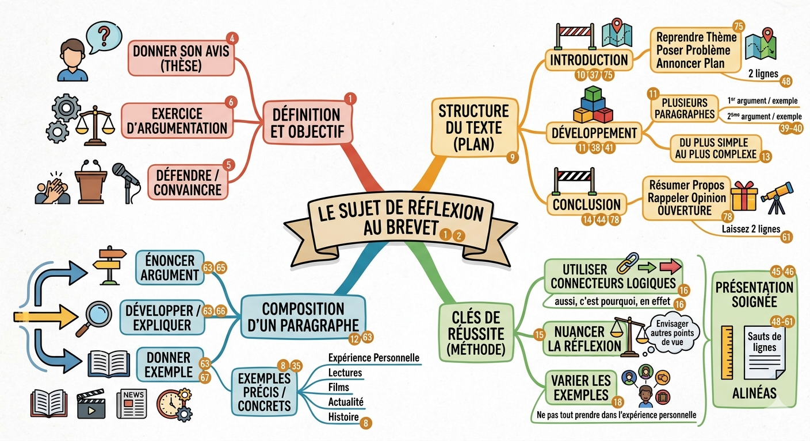

Le sujet de réflexion au brevet
La méthode : analyser avant de rédiger
Qu'est-ce que le sujet de réflexion ?
Le sujet de réflexion est un exercice d'argumentation : on vous pose une question et vous devez défendre votre avis de façon organisée, en appuyant votre opinion sur des arguments et des exemples précis. Ce n'est pas une dissertation philosophique : vous donnez votre point de vue personnel, mais de façon structurée et nuancée.
Comme pour l'écriture d'invention, la règle d'or est : analyser avant de rédiger. Cinq minutes de réflexion au brouillon valent mieux que deux pages mal organisées.
La structure du texte argumentatif
Les trois parties
Introduction
- Reprendre le thème du sujet
- Poser le problème (reformuler la question)
- Annoncer votre opinion (thèse)
- Annoncer le plan en 1 phrase
Développement
- 2 à 3 paragraphes distincts
- 1 argument par paragraphe
- 1 exemple précis par argument
- Du plus simple au plus complexe
- Connecteurs logiques entre les §
Conclusion
- Résumer les arguments principaux
- Rappeler votre opinion (thèse)
- Ouverture : question plus large, réflexion
Comment composer un paragraphe ?
Chaque paragraphe du développement suit toujours le même schéma en trois temps :
1. Énoncer l'argument
Présentez votre idée clairement en une ou deux phrases. C'est votre affirmation principale.
« La lecture permet de développer l'empathie en nous plaçant dans la peau de personnages différents de nous. »
2. Développer / Expliquer
Expliquez pourquoi cet argument est valide. Approfondissez, nuancez, montrez que vous y avez réfléchi.
« En effet, un roman nous oblige à adopter le point de vue d'un narrateur dont nous partageons les pensées et les émotions… »
3. Donner un exemple
Illustrez avec un exemple précis et concret. Variez les sources : lectures, films, actualité, expérience personnelle, histoire.
« Ainsi, dans Les Misérables de Victor Hugo, le lecteur comprend la détresse de Jean Valjean grâce au récit à la première personne… »
Varier les sources d'exemples
Lectures
Romans étudiés en classe, livres lus personnellement, fables, contes, nouvelles. Citez l'auteur et le titre.
Films & séries
Un film ou une série bien choisi peut illustrer un argument efficacement. Citez le titre et le réalisateur si possible.
Actualité & histoire
Faits historiques, événements récents, personnalités marquantes. Assurez-vous de la précision des faits cités.
Expérience personnelle
Vécus personnels, observations du quotidien. Utile mais à ne pas utiliser comme seule source d'exemples.
Récapitulatif de la structure
| Partie | Contenu | Connecteurs typiques | Longueur indicative |
|---|---|---|---|
| Introduction | Thème + problème + thèse + annonce du plan | — | 2 à 4 phrases |
| § 1 — Argument 1 | Argument simple + explication + exemple | Tout d'abord, En premier lieu, Premièrement | 5 à 8 phrases |
| § 2 — Argument 2 | Argument développé + explication + exemple | De plus, En outre, Par ailleurs, Ensuite | 5 à 8 phrases |
| § 3 — Nuance (optionnel) | Point de vue opposé réfuté ou nuancé | Cependant, Toutefois, Néanmoins, Certes… mais | 3 à 5 phrases |
| Conclusion | Résumé + thèse + ouverture | En conclusion, En définitive, Ainsi, Pour conclure | 2 à 4 phrases |
Boîte à outils
Connecteurs logiques essentiels
Ajouter un argument
Opposer / Nuancer
Illustrer / Expliquer
Introduire
Conclure
Cause / Conséquence
Formules pour exprimer son opinion
Affirmer son point de vue
Nuancer son point de vue
Introduire un exemple
Formules d'introduction et de conclusion
Débuter l'introduction
Ouvrir la conclusion
Pièges à éviter
Le checklist avant de rendre la copie
✅ J'ai bien lu et compris la question posée.
✅ Mon texte a une introduction, un développement et une conclusion clairement séparés.
✅ Chaque paragraphe contient un argument ET un exemple précis.
✅ J'ai utilisé des connecteurs logiques entre mes paragraphes.
✅ J'ai nuancé mon propos (envisagé d'autres points de vue).
✅ J'ai varié mes sources d'exemples (pas uniquement l'expérience personnelle).
✅ J'ai relu : orthographe, accords, ponctuation, présentation.
Rédiger sans plan
L'écriture « au fil de la plume » donne un texte décousu, sans progression logique, qui ne convainc pas le lecteur.
❌ Enchaîner des idées sans lien : « Je pense que… Et aussi… En plus… »
✅ Plan au brouillon : argument 1 (+ exemple) → argument 2 (+ exemple) → nuance → conclusion
Solution : 5 minutes de brouillon = un plan clair = un texte qui tient la route.
Argument sans exemple
Un argument non illustré reste une affirmation gratuite. Sans exemple concret, le correcteur ne peut pas vérifier que votre raisonnement tient.
❌ « La lecture développe l'imagination. » (sans exemple)
✅ « La lecture développe l'imagination. Ainsi, dans Harry Potter de J.K. Rowling, le lecteur est invité à visualiser un monde magique complexe qui enrichit sa capacité à imaginer. »
Ne citer que son expérience personnelle
L'expérience personnelle est valide comme exemple mais ne suffit pas seule. Elle manque de portée générale et peut sembler anecdotique.
❌ Trois exemples tirés uniquement de votre vie personnelle.
✅ Un exemple personnel + un exemple littéraire + un exemple tiré de l'actualité ou de l'histoire.
Oublier de nuancer
Un texte qui défend un point de vue sans jamais envisager une objection semble naïf et peu convaincant. La nuance montre la maturité de la réflexion.
❌ Trois arguments dans le même sens, sans nuance.
✅ Deux arguments pour + une nuance (« Certes, certains pourraient objecter que… Cependant… ») + conclusion nuancée.
Registre familier
Le sujet de réflexion exige un registre courant à soutenu. Les expressions familières ou le langage oral sont pénalisés.
❌ « Je trouve que c'est trop bien la lecture parce que ça nous fait voyager. »
✅ « Il me semble que la lecture constitue une forme d'évasion remarquable, permettant au lecteur de découvrir des univers qui lui sont étrangers. »
Hors-sujet partiel
Traiter un sujet voisin mais pas exactement celui posé est une erreur fréquente. Chaque argument doit répondre directement à la question.
Question : « Pensez-vous que la technologie nuise aux relations humaines ? »
❌ Parler de la pollution numérique ou de l'écran en classe (thèmes connexes mais hors-sujet).
✅ Rester centré sur la question des relations humaines : isolement, communication virtuelle, dépendance…
Cartes mentales
Cliquez sur une carte pour l'agrandir. Téléchargez-la pour vos révisions.
Le sujet de réflexion au brevet — vue générale

Structure et argumentation — détaillé

Ressource interactive — Méthode en images
Explorez cette présentation interactive pour réviser la méthode pas à pas :
Fiche de révision
Choisis les éléments à inclure :
La méthode
Structure
Connecteurs clés
Pièges
Aller plus loin
Vidéos — méthode générale
Brevet de Français : Quelle rédaction choisir ? LE SUJET de RÉFLEXION du BREVET 2025 ! Réussir le sujet de réflexion en 6 étapes — Hatier 2026Vidéos — comprendre l'exercice
À quoi ressemble le sujet de réflexion ? #brevet Lumni — Construire son argumentation Lumni — Méthodologie du sujet de réflexionS'entraîner en ligne
Atelier d'écriture interactifSur ce site, va dans la section « Rédactions 3ème » puis clique sur « Sujet de réflexion » pour t'entraîner avec des sujets guidés.